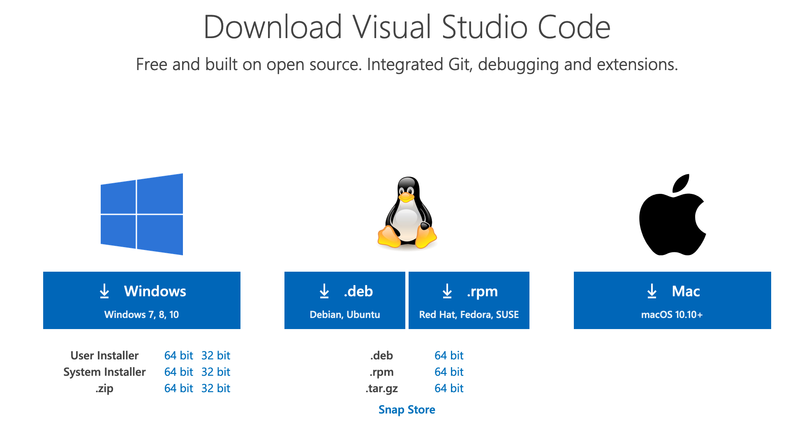
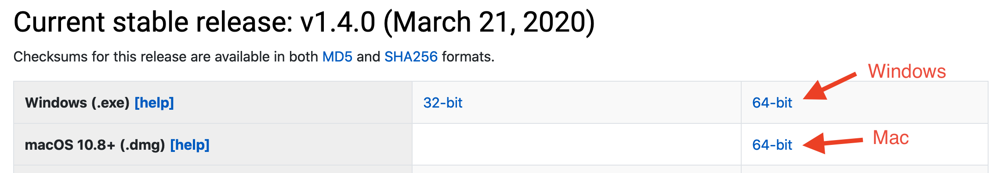

Lesson 1 - Getting started
Learning Objectives
Concepts - After completing this lesson, students will be able to:
- Compare and contrast computer code meaning and syntax
- Identify common "algorithms" used in their daily lives
Skills - After completing this lesson, students will be able to:
- Navigate their computer's file system using a command line interface
- Clone, commit to, and push from a git repository
- Use the
juliaREPL to do basic arithmatic
Assignments - This lesson is complete when students have:
- Completed the BISC195 entrance survey
- Completed the BISC195 pretest
- Read the Preface and Chapter 1 of Think Julia
- Installed visual studio code and julia on their computers
- Windows users should also have installed Windows Terminal
- Run all code examples from Lesson 1 on their own computers
This file contains instructions for completing today's lesson. It is written in a language called "markdown", which allows plain text to be easily converted into nicely formatted webpages like the one you're looking at now. But we'll come back to this.
To complete this lesson, follow the instructions below.
It is even more important than usual to read and follow instructions when it comes to computers and programming. We will be interacting with our computers using procedural language - that is, language that follows a strict set of procedures. Skipping steps or doing things out of order can lead to unexpected results.
Part 1 - First steps
Most modern computer code is just text that tells a computer what to do. The part that is complicated is that code tends to be:
- Literal - the computer can only do exactly what you specifically tell it; it won't try to guess your meaning and it doesn't understand nuance.
- Procedural - you must provide all of the commands and you must provide them in the correct order
Watch this video to get a sense of why this matters so much.
In this course, we'll be primarily interacting with that computer code as plain text, but there are a bunch of tools that people have built to make that job a bit easier.
Installing your IDE
One of those tools is an "Integrated Development Environment" or "IDE". This is basically just a text editor with a bunch of bells and whistles.
There are a number of different text editors to chose from, but in this course, we're going to use Visual Studio Code
Click here and select the correct download for your operating system

Open the downloaded file and follow the prompts to install the program
If you prefer to use a different text editor, that's ok, but it's important to be sure it's a plain text editor and not a rich text editor like MS Word. The files saved by rich text editors contain extraneous information, and are not suitable for programming.
Check with Kevin about your choice if you're unsure.
Installing julia
In this course, we're primarily going to be programming in the julia programming language. Julia is a modern programming language designed for scientific computing.
Go to the julia downloads page and select the correct download for your operating system.

Open the downloaded file and follow the prompts to install it.
- Mac users, once the
.dmgfile is opened, you will need to drag the app file into yourApplicationsfolder - Windows users - there will be a
.exefile - open it to start the installation.
- Mac users, once the
Once the julia application is installed, open it. This should cause a text window to open looking something like this:
_
_ _ _(_)_ | Documentation: https://docs.julialang.org
(_) | (_) (_) |
_ _ _| |_ __ _ | Type "?" for help, "]?" for Pkg help.
| | | | | | |/ _` | |
| | |_| | | | (_| | | Version 1.4.0 (2020-03-21)
_/ |\__'_|_|_|\__'_| | Official https://julialang.org/ release
|__/ |
julia>Type 2+2 and hit enter, you should see the number 4, and then another julia prompt:
julia> 2+2
4
julia>You can close the window in the normal way, or type exit() and hit enter.
Sign up for github classroom
All assignments will be distributed, turned in and graded through github classroom.
To use it, you need to sign up for a github account if you don't have one already.
If you don't have an account already, get one at https://github.com/join.
You do not need to use your wellesley.edu email address to create this account, but let Kevin know if you use a different address so that you get credit for your work.
If you'd like, you may sign up for a github student discount pack This is not necessary for this course.
Part 2 - Navigating the filesystem using the terminal
You are probably already familiar with your computer's "filesystem"[1]. If you've ever looked at files on your Desktop, or opened Finder/Explorer and navigated to your Documents folder, you've been using the file system. Data is stored on your hard drive as a continuous binary sequence (just 1s and 0s) and without a filesystem, it would be impossible to find anything!
Finder/Explorer are software programs used to interact with your filesystem. The filesystem contains a mix of files, which are blobs of information (eg. a .docx file containing a MS Word doc) and folders, which can contain files as well as other folders. Just to be confusing, what we colloquially call folders are technically called "directories." I will use the terms interchangeably.

You may not have thought much about how the filesystem is organized, but you probably have an intuitive sense of how this works. Your "home"[3] directory contains the Desktop and Documents directories, each of which might contain many other subdirectories and/or files, and each subdirectory may have yet more subdirectories and files and so on.
Finder/Explorer are examples of a graphical user interface (GUI - pronounced "gooey"), that is a program that allows you to interact with it visually. However, GUIs are difficult to design and maintain, so most bioinformatics tools are built around "command line"[4] or text-based interfaces. The good news is that the organization of the filesystem is the same whether you're interacting with it in a GUI or in the terminal. And once you learn how to use the command line interface, you'll see that it is a powerful way to get a lot done quickly.
Open the terminal application
Mac Users:
- Open Applications
- Click Open the
Terminalapplication
Windows Users:
- Click Start -> Programs
- Open Windows Subsystem for Linux
You will be greeted with a white or black box that contains some text, and a cursor next to the dollar symbol $. This is the command prompt.
Using the terminal can be quite challenging at first. For one, you cannot interact with text in the same way as you would in a word-processing program like Microsoft Word. In particular, you can't use your mouse to do things like click to move a cursor, or highlight a section of text to be deleted. Instead, you have to use ← and → keys.
Walk around your file system
Think of your filesystem as a branching network of roads that you can walk along. Each directory is a location that has a path back to its parent directory, may or may not contain objects (files), and may have one or many roads leading to new locations (subdirectories).
Your present location, referred to as the "working directory"[5], is your home folder when you first open the terminal. Let's see where that is.
In your terminal, type pwd and press enter. This is the "print working directory" command.
$ pwd/home/kevinIf you're using a Mac, this probably displayed something like /Users/yourname.
Whenever you see code blocks in these lessons that start with $, this is a hint that it is a shell command. When copying or typing these commands, do not include the $ (or anything to the left of it). For example, to complete the task above, you should only type pwd, then press enter.
$ is referred to as the "prompt" or "command prompt." When you enter a command, you may or may not see some output (which will not be preceded by $) and once the command has finished executing, you will see a new prompt.
NOTE: These code blocks will often be followed by a block that does not start with a $. This is the expected output; you shouldn't try to copy-past this into your terminal.
Let's take a look around. the ls command is used to list the contents of the directory.
$ lsbin Documents R scratch
Desktop Downloads Public reposYour output will likely look a bit different from mine, but you'll probably see Documents and Desktop, as well as other directories you may recognize.
You may not see any output. This is because the default Ubuntu installation on Windows doesn't have any directories or files in the home folder. But we can actually trick the shell into using the Windows home folder instead. In the following command, replace <yourname> with your Windows username.
$ export HOME=/mnt/c/Users/<yourname>
$ cd ~
$ pwd
/mnt/c/Users/<yourname>Now, enter ls again, and you should see the contents of your Windows home folder.
The ls command can also take a directory as an "argument."[8] We'll talk more about what that means later - for now, just add Desktop to the command, separated by a space
$ ls Desktopdf.csv dm.csv dupes.csv itp.svgAgain, your output should look different from mine, but (assuming you store anything on your Desktop), you should see a list of files and directories. If your Desktop is pristine, congratulations! You won't see any output.
The filesystem is organized hierarchically - At the very top of the hierarchy is the [2], which you can think of as a folder that contains all other files and folders. On a Mac (and other Unix systems), the root is referred to with a single forward slash (/), While on Windows machines, the root is probably C:\.
When you open Windows Subsystem for Linux, you're actually running a fully functional OS with its own file system. As a result, when you type pwd in the terminal, you will see something like /home/yourname, rather than seeing your Windows OS home folder.
But WSL has access to your files in a special path, /mnt/c/. If you want to see the files in your Windows Desktop/ directory for example, look in /mnt/c/Users/yourname/Desktop.
Moving around
Say you are sitting in your room, and you want to give someone directions to Lulu. One way to do this would be to give directions from where you are:
- Go out the door,
- Go down the hall to the elevator
- ... etc
In this case, you're providing a "relative path"[6] - the directions only make sense if the person is starting in your room. If they're at the Science Center and they follow your instructions, they will become hopelessly lost.
Alternatively, you could provide directions from a shared point of reference.
- Start at the campus gate on the corner of Weston Rd and Central St
- Walk down the path and turn right just past the Child Study Center towards the Botanical Gardens
- ... etc
In this case, you're providing an "absolute path"[7] - no matter where the person is at the time, the directions will make sense.
An absolute path is great, since the same instructions are useful in most situations, but in many cases, it would be tedious to always have to start instructions from the same location.
When providing a file path to a unix operating system, you can also provide relative or absolute paths. There are two shared points of reference, your home folder and root, which are specified by ~/ and / respectively when placed at the beginning of the path.
Up above, when we looked at the contents of the Desktop using ls, we provided the relative path from where we were in the home folder. You can tell, because the path did not start with ~/ or /.
We could have done the same thing using an absolute path:
$ ls ~/Desktopdf.csv dm.csv dupes.csv itp.svgThe output here should be the same as what you got above. But what if we're in a different location?
Change directory
In order to change the working directory, we use the cd command, giving a path as an argument. For example, to make Desktop the current working directory:
$ cd ~/DesktopIs ~/Desktop a relative or absolute path?
It's a good idea (in general, but especially while learning) to repeatedly check that the thing you think happened actually happened.
$ pwd/home/kevin/Desktop$ lsdf.csv dm.csv dupes.csv itp.svgNotice that with ls, we didn't have to give Desktop as an argument this time. By default, ls lists files in the current working directory.
- What does
pwdstand for? - What does
lsstand for? - With
Desktopas your working directory, how would you list the contents of your home folder?
Let's go back to the home folder. Again, we can provide a relative or an absolute path - the absolute path back to home is always ~/, but how do we do the relative path? To walk into subdirectories, we can just provide the name of the subdirectory, but how do we walk "backwards", into a parent directory?
In unix, parent directories are indicated with ../. So to go back home from /home/kevin/Desktop using a relative path, I would write:
$ cd ../
$ pwd/home/kevinIt is possible to be more specific about where you want to go after moving up a directory. For example, I could write ../Documents to go up a directory and then move into my Documents folder.
You can also move up more than just one directory. For example, you can go up two directories with ../../
Practice
Practice moving around your file system using cd, and checking where you are using pwd and ls. If you get lost, just enter cd ~/ to get yourself home.
Rather than typing long paths (or even short ones), use the <TAB> key to do auto-completion. For example, with your home folder as your current working directory, type ls De (don't execute), then press <TAB>. This should cause the terminal to fill in ls Desktop automatically.
Try typing ls Do, then <TAB>. The first time, nothing happens. Why? Because both Documents and Downloads are valid completions, and the terminal doesn't know which one you want. If you hit <TAB> again, it will display all of the options available. If you add a c, then hit <TAB>, it should complete Documents.
As you're navigating around, try to do as little typing as possible. Get into the habit of typing a little bit of a path, then hitting <TAB> (twice if nothing shows up the first time).
Manipulating files and directories
Of course, looking around is not the only thing you can do from the terminal. Using the terminal allows you to rapidly view, edit, and otherwise manipulate stuff in your file system.
It is possible to seriously and irreparably damage your computer using commands from the terminal.
Be sure to follow instructions carefully, and be sure to keep your backups current.
First, let's create a directory for use in this course. You can put it in your home directory, or in Documents, or if you have a directory where your course files usually go, that's fine too.
I'll assume you're making this in ~/Documents/, but if you want it somewhere else, just modify the path accordingly. the command to make a directory is mkdir <path>.
In many examples like this, I will refer to things wrapped in <>, like <path> or <username>. These are stand-ins for some other value. This is a signal that you should replace that text (including the < and > characters) with the appropriate value.
Create and explore directories and files
$ mkdir ~/Documents/bisc195
$ cd ~/Documents/bisc195
$ pwd/home/kevin/Documents/bisc195Now, copy and execute the following command - don't worry about what it does. (if you really want to know, you can read about it here: "while loop"[9])
bisc195 $ for i in {1..10}; do echo "This is file #${i}" > "file${i}.txt"; doneIt should finish very quickly. Let's look at what it did
bisc195 $ lsfile1.txt file2.txt file4.txt file6.txt file8.txt
file10.txt file3.txt file5.txt file7.txt file9.txtThe code you executed created 10 files, each of which contains a bit of text. Look at the contents of file1.txt using the head command.
bisc195 $ head file1.txtThis is file #1The head command prints the first 10 lines of a file by default, but this file only has 1 line, so that's all that's shown.
File names usually have 2 parts - the name and the "extension." The extension, like .txt or .docx, usually tells you something about what the file contains, or how it's encoded, but this is not a requirement. The files above could have been named fileX.whatever, and still have the same content. Usually, it's a good idea to have the extension reflect what's in the file, .txt for text, .jl for julia code etc.
We can look at multiple files at the same time using the concatenate command:
bisc195 $ cat file1.txt file2.txt file3.txtThis is file #1
This is file #2
This is file #3cat takes any number of files (even just 1!) and prints their entire content to the screen one after another. Be careful - some files are really long, and will go on and on and on and on and...
Glob patterns
If we want to print the content of all 9 files,
we could type them all out,
but that would get tedious.
There are many useful shortcuts in programming
(programmers are lazy like efficiency),
one of which is glob patterns.
The most common glob is *, which stands for any number of characters, including none.
For example,
bisc195 $ cat *.txtThis is file #1
This is file #10
This is file #2
This is file #3
This is file #4
This is file #5
This is file #6
This is file #7
This is file #8
This is file #9Here, *.txt means "anything that ends with .txt".
Another glob is ?, which matches any single character.
bisc195 $ cat file?.txtThis is file #1
This is file #2
This is file #3
This is file #4
This is file #5
This is file #6
This is file #7
This is file #8
This is file #9Notice that in this example, file10.txt is not included, since there are 2 characters between file and .txt.
Finally, you can use brackets to specify specific characters, or ranges of characters:
bisc195 $ cat file[2468].txtThis is file #2
This is file #4
This is file #6
This is file #8bisc195 $ cat file[6-8].txtThis is file #6
This is file #7
This is file #8Let's make a new file that contains the content of all of the others. The > character at the end of a command redirects the output of that command into a new file, so we can do:
bisc195 $ cat file*.txt > all_files.txt
bisc195 $ lsall_files.txt file10.txt file3.txt file5.txt file7.txt file9.txt
file1.txt file2.txt file4.txt file6.txt file8.txtNotice that the cat command in this case didn't print anything to the screen.
We can check that the right content went into all_files.txt using cat again.
bisc195 $ cat all_files.txtThis is file #1
This is file #10
This is file #2
This is file #3
This is file #4
This is file #5
This is file #6
This is file #7
This is file #8
This is file #9move and copy files
We'll use this directory for the rest of this course, but it could use some more organization. First, let's make a directory called lesson1.
Can you remember how to make a new directory? I'm not going to provide the command for this step, but before moving on, you should be able to execute the following command without getting an error:
bisc195 $ ls lesson1/
bisc195 $When you first create the directory, it will be empty, so ls won't return anything.
If you see ls: lesson1: No such file or directory, don't move on to the next step.
Neither the mv nor cp command ask before overwriting files, and there's no "undo" at the command line. In other words, if you move or copy a file into a directory with file of the same name, the later file will be destroyed and will not be recoverable.
Use caution when using these commands outside the context of these lessons.
Once you've created the lesson1/ directory, let's move the text files we've created into it. The mv command take the form mv <source> <destination>. For example:
bisc195 $ mv file1.txt lesson1/file1.txt
bisc195 $Now,
bisc195 $ ls lesson1file1.txtbisc195 $ lsall_files.txt file2.txt file4.txt file6.txt file8.txt lesson1
file10.txt file3.txt file5.txt file7.txt file9.txtAs you can see, file1.txt has been moved to the lesson1/ subdirectory, and is no longer in the current directory.
If we don't want to change the name of the file, we can actually just provide a directory as the destination, rather than typing out the entire new path.
bisc195 $ mv file2.txt lesson1/
bisc195 $ ls lesson1file1.txt file2.txtIn this way, we can move multiple files at the same time, separated by spaces, as long as the final argument is a directory:
bisc195 $ mv file3.txt file4.txt file5.txt lesson1/
bisc195 $ ls lesson1/file1.txt file2.txt file3.txt file4.txt file5.txtRemember, ls without an argument shows us the contents of the current directory.
bisc195 $ lsall_files.txt file10.txt file6.txt file7.txt file8.txt file9.txt lesson1Can you figure out how to move the rest of the file*.txt files to the lesson1/ directory using a glob pattern?
Once you've moved all the text files other than all_files.txt into the lesson1 folder, change the working directory to lesson1 using cd
If you accidentally moved all_files.txt into lesson1/, you can move it back using the relative path ./, which means "current directory." In other words, from the bisc195 directory, you can execute mv lesson1/all_files.txt ./.
Alternatively, if you've already done cd lesson1, you can do mv all_files.txt ../. Recall that ../ means "parent directory."
The copy command works the same way as mv, except that the original stays where it is.
Check to make sure you're in the lesson1 directory:
lesson1 $ pwd/home/kevin/Documents/bisc195/lesson1lesson1 $ ls ./file1.txt file2.txt file4.txt file6.txt file8.txt
file10.txt file3.txt file5.txt file7.txt file9.txtlesson1 $ ls ../all_files.txt lesson1Let's copy all_files.txt into the current directory using cp:
lesson1 $ cp ../all_files.txt ./
lesson1 $ lsall_files.txt file10.txt file3.txt file5.txt file7.txt file9.txt
file1.txt file2.txt file4.txt file6.txt file8.txt$ ls ../all_files.txt lesson1As you can see, all_files.txt is now present in both the parent bisc195/ directory and the lesson1/ directory.
Make a copy of file1.txt called file1_second.txt in the lesson1/ directory. To check that you've succeeded, execute ls file1*.txt, and the output should be file1.txt file10.txt file1_second.txt
Rename and remove files
Once again, there is NO undo when using the terminal. I once deleted 10 Gb of sequencing files from a lab server in 2 seconds with a 13 character command.
Please use care with these commands.
We actually don't need 2 copies of the all_files.txt. Let's remove the one in the bisc195 directory.
lesson1 $ rm ../all_files.txt
lesson1 $ ls ../lesson1Come to think of it - we don't need any of these files. Let's remove them all.
I know, I'm repeating myself. rm combined with glob patterns can do a lot of damage very quickly. Beware!
Before we do anything, verify we're still in the lesson1 directory using pwd and ls.
Then, remove all of the .txt files in the current directory:
lesson1 $ rm *.txt
lesson1 $ ls
lesson1 $We don't need the lesson1 directory either. First, move to the parent directory (bisc195/) using cd. rm doesn't work on directories:
bisc195 $ rm lesson1rm: lesson1: is a directoryInstead, use the remove directory command:
bisc195 $ rmdir lesson1
bisc195 $ ls
bisc195 $Summary of Terminal commands
cdchanges the current working directorypwdprints (shows) the current working directoryls <path>lists the contents of a directorylswithout a path argument lists the contents of the current working directoryls <glob>lists the files/directories matching a pattern (eg ls *.txt)
- use relative or absolute paths
- aboslute paths start with
/(root) or~/(home) - relative paths start with
./,../or file and directory names
- aboslute paths start with
mkdirfor creating directoriesmv <source(s)> <destination>to move files and directoriescp <source(s)> <destination>to copy files and directories- glob patterns can be used to act on many files at once
*= 0 or more characters (eg. *.txt)?= exactly 1 character (eg. file?.txt)[]= specific characters or range of characters- eg
file[246].txt=file2.txt file3.txt file6.txt - eg
file[5-7].txt=file5.txt file6.txt file7.txt
- eg
rmremoves filesrmdirremoves (empty) directories
Part 2 - git for version control
If you've ever worked on an assignment and ended up with a list of files like
assignment1.docxassignment1_v2.docxassignment1_v2_kevins_comments.docxassignment1_v3_fix_final.docxassignment1_v3_fix_final_for_real_this_time.docx
... you'll understand the importance of version control.
It goes well beyond naming of course. How can you tell what changed between version 1 and version2? Does version 3 take the comments Kevin made on v2 into account? Is ...fix_final_for_real_this_time really the last version?
It's even worse if multiple people are working on the same document. If you and your lab partner are editing a document at the same time, How can you gracefully merge the changes? What if the changes you make and the changes she makes are incompatible?
Software like Google Docs can address some of these issues, but incompatible changes can still occur. Imagine you're writing an essay about a dog. At the beginning of the essay, you've written
The quick brown fox jumped over the lazy dog
You and your partner are both refining this epic story at the same time, and further on you write,
Because of how lazy the dog was, she didn't chase the fox.
But your partner decided the first line needed some more detail and changes it to
The quick brown female fox jumped over the lazy male dog.
so your pronouns are out of step.
In writing, a mistake like this might just look silly, but in programming, it can mean your code doesn't run or generates the wrong answer. Even more critically, code often involves many files working together, and keeping track of the versions of multiple files at the same time is necessary.
git is a program for version control
git is a distributed version control system (DVCS). That is, it helps one keep track of one's code, and the information about versions is distributed among many systems.
Early version control systems were centralized - there was a single server that kept track of all of the information about a code repository. Users could "checkout" individual files to edit them, and the central repository would lock that file to prevent conflicting changes. This makes it easy to prevent conflicts, but is also a bit impractical.
By contrast, git is distributed - each user's system contains the entire revision history, and conflicts between versions are explicitly managed when two different edits to the code are brought together. Don't worry if this isn't super clear at this stage - we'll get into some practical examples in a sec.
You can think of a git "repository" (usually shortened to "repo") as a directory with super powers. If you're looking at the directory using Finder or Explorer, it might not look any different, but it's much more powerful. Before we get into that, though, we need to get git installed.
Installing git
If you are using Windows Subsystem for linux, or a linux operation system, git should already be installed.
Step 1:
Check if git is installed by executing git --help in the terminal.
$ git --helpusage: git [--version] [--help] [-C <path>] [-c <name>=<value>]
[--exec-path[=<path>]] [--html-path] [--man-path] [--info-path]
[-p | --paginate | -P | --no-pager] [--no-replace-objects] [--bare]
[--git-dir=<path>] [--work-tree=<path>] [--namespace=<name>]
<command> [<args>]
These are common Git commands used in various situations:
start a working area (see also: git help tutorial)
clone Clone a repository into a new directory
init Create an empty Git repository or reinitialize an existing one
# ... output truncatedIf you're using a Mac, git might not be installed. Executing the command above will probably result in an error message:
bash: git: command not found...So you need to install it (if the git help message appeared, you can skip to here).
The easiest way to install git on a mac is using homebrew.
Step 1b:
If you're using a mac and don't have git installed, enter the following commands into your terminal (excluding the $), then press enter to execute.
$ xcode-select --installThis may prompt you to download and install "command line developer tools" from the app store. If it does, click install and follow the prompts. When that's finished, and you see the command prompt ($) again, run the following command. Note: this is a case when you should probably use copy/paste.
$ /usr/bin/ruby -e "$(curl -fsSL https://raw.githubusercontent.com/Homebrew/install/master/install)"==> This script will install:
/usr/local/bin/brew
/usr/local/share/doc/homebrew
/usr/local/share/man/man1/brew.1
/usr/local/share/zsh/site-functions/_brew
/usr/local/etc/bash_completion.d/brew
/usr/local/Homebrew
==> The following new directories will be created:
/usr/local/sbin
# ...And follow the prompts. If you are asked for your password, use the one you use to log into your computer. Note that you will not see anything appear as you type, just type the password and hit enter.
Configuring git
The next step is to tell git your name and email address, so that you are credited with the changes you make to repositories.
Step 2:
Enter the following commands, changing the name and e-mail address to yours.
$ git config --global user.name "Kevin Bonham, PhD"
$ git config --global user.email kbonham@wellesley.eduPractice: Create your first git repository
Step 3:
In your terminal, change your working directory to your Documents folder (~/Documents)
You can perform the following steps either in the Documents/ folder of your linux filesystem found at ~/Documents, or of your Windows filesystem, which is found at /mnt/c/Users/<your_username>/Documents
Step 4:
Next, create a new directory called my_repo.
cdis the command for changing working directorymkdiris the command for making a directory
Look back at the previous section for more information, and don't worry if you need to keep looking up stuff like this. The stuff you do regularly will become second nature, and the other stuff is always a Google search away.
Step 5:
Now, change your working directory into the newly created my_repo/ and initialize a git repository using the command git init
my_repo $ git initInitialized empty Git repository in /home/kevin/Documents/my_repo/.git/Is the path shown in the output a relative or absolute path?
If you use the command ls to list the contents of the current directory, can you see the .git/ directory that was created? Why or why not?
Step 6:
Open the folder in your operating system's file system navigator (Finder on a Mac, Explorer in Windows).
If you created the repository in the linux filesystem, the easiest way to do this is to execute explorer.exe ./ from the command line. See here for more information about how the Windows and Linux filesystems interact.
This folder appears empty right now, but in fact, there's a hidden .git folder that will include all of the version information for all of the files that you track.
Let's see how this works.
Step 7:
open the VS Code text editor and create a new file, then save it in your repository directory as fox.txt.
Step 8:
In your terminal, list the contents of the directory to be sure the file was created.
my_repo $ lsfox.txtWhen you create new files, git does not track them automatically. Let's see what git sees at the moment:
$ git statusOn branch master
No commits yet
Untracked files:
(use "git add <file>..." to include in what will be committed)
fox.txt
nothing added to commit but untracked files present (use "git add" to track)So git sees the file exists, but it tells you it's not being tracked.
Step 9:
Let's fix that (the status message helpfully tells you how):
my_repo $ git add fox.txt
my_repo $ git statusOn branch master
No commits yet
Changes to be committed:
(use "git rm --cached <file>..." to unstage)
new file: fox.txtThe file is now "staged"[10] - that is ready to be "committed." In git, a "commit"[11] is used to register a specific version of a repository. The current state of all of the tracked files in the repository will be recorded.
We don't really need to track an empty file, let's add some text to it.
Step 10:
In VS Code, add the following line to fox.txt and save.
The quick fox jumped.Now, back in the terminal, what's the status?
$ git statusOn branch master
No commits yet
Changes to be committed:
(use "git rm --cached <file>..." to unstage)
new file: fox.txt
Changes not staged for commit:
(use "git add <file>..." to update what will be committed)
(use "git checkout -- <file>..." to discard changes in working directory)
modified: fox.txtNotice that fox.txt now appears under both "Changes to be committed" and "Changes not staged for commit".
Why? Because you initially staged an empty file, and now there's a modified version of the file that has not been staged. You can see the difference between the current state of the file and what's staged using git diff
$ git diff fox.txt | catdiff --git a/fox.txt b/fox.txt
index e69de29..395235f 100644
--- a/fox.txt
+++ b/fox.txt
@@ -0,0 +1 @@
+The quick fox jumped.The syntax of this output is perhaps a bit confusing, but it's saying that a line was added to fox.txt.
Step 11:
Let's go ahead and stage this change, and then make our first commit.
$ git add fox.txt
$ git commit -m "my first commit"[master (root-commit) b183d56] my first commit
1 file changed, 1 insertion(+)
create mode 100644 fox.txt$ git statusOn branch master
nothing to commit, working tree cleanCongratulations! You have a git repository.
Just keep committing
Try making some more changes to this file, make some new files, and use git add, git commit, and git status to keep track of those changes.
If you enter git commit without including a commit message with the -m flag, your terminal may transform into a text editor. If this happens, you may find it difficult to return to the command prompt. Try typing (don't copy/paste) :q! then enter.
If this doesn't work, ask for assistance. If Kevin or the TAs are unavailable, you can always close and re-open your terminal.
In either case, your commit will be aborted.
Using git in this course
It might not be clear to you yet why using a version control system is worthwhile. If you don't trust me, the fact that almost every software company uses git (or something similar) should give you some confidence that it's important.
In any case, this entire course will use git and github.com (a website for managing and collaborating on git repositories). In the first assignment, you'll learn how to do this.
Part 3 - Running julia code
For a lot of this course, we will be using the julia programming language rather than the command line.
There are a few different ways to run julia code, and this section will get you acquaninted with a couple of them.
The julia REPL
Open julia, which you should have installed in the first part of this lesson.
Your terminal application should open, running julia:
_
_ _ _(_)_ | Documentation: https://docs.julialang.org
(_) | (_) (_) |
_ _ _| |_ __ _ | Type "?" for help, "]?" for Pkg help.
| | | | | | |/ _` | |
| | |_| | | | (_| | | Version 1.4.0 (2020-03-21)
_/ |\__'_|_|_|\__'_| | Official https://julialang.org/ release
|__/ |
julia>Technically speaking, this is the julia "Read, evaluate, print, loop", or "REPL".
When you enter text at the julia> prompt, the REPL reads it, evaluates it as julia code, prints[12] the result, and then loops back to the prompt.
Let's try it! Type println("Hello, World!") at the prompt and hit enter.
julia> println("Hello, World!")
Hello, World!Don't worry if you don't understand all of the components of this command - we'll get there.
As much as possible, try typing out the commands in these lessons, rather than copy-pasting. It's important to build the muscle memory, and to see the errors that appear when you have typos!
For example, what did I miss here:
println(Hello, World!)Running julia from the command line
You can also execute short snippets of code from the command line. But first, you need to tell the terminal where to look for the julia program.
Mac users, execute the following in your terminal:
$ echo 'export PATH=$PATH:/Applications/Julia-1.4.app/Contents/Resources/julia/bin/' >> ~/.bash_profileYour situation is a bit more complicated. You'll need a separate julia installation for your linux operating system in order to run julia from the command line.
I will write up complete instructions soon.
Then restart the terminal. Don't worry if you don't understand what that command is doing - it's not worth it to understand it at this moment.
Open your terminal and enter the following:
$ julia -e 'println("Hello, World!")'Hello, World!The -e is a command-line flag that tells julia to just execute the next command as julia code. Note the use of single quotes (') surrounding the command.
- What happens if you just enter
juliaat the command line without additional arguments? - What happens if you use double quotes instead of single quotes? Why do you think that is?
Running julia scripts
Our code is often going to be much more complicated than what we've done so far. In those cases, and in order to keep a record of what we're doing, it's useful to put our julia code in a file.
Open up VS Code, and create a new file called
hello.jl.Type
println("Hello, World!")into the file and save it. Note the path to the directory where you saved the file!run:
$ julia <path_to_directory>/hello.jlHello, World!
When code is saved into a file that can be run from the commandline, it's called a "script." All of your assigments will be julia code written into files and commited to code repositories using git.
But it's important to realize that all of this code is the same; it's just text. That text has specific requirements in order to be parsed by the julia interpreter, but whether you run code in the REPL, from the command line, or in a script, it has the same behavior.
Key Terms
More info on loops
Here's some more information about the loop you ran earlier, but at least for now, it's not necessary to understand it.
- 1filesystem - a hierarchical organization of files and directories. Additional reading
- 2root - the top of the filesystem hierarchy. A folder that contains all other files and folders.
- 3home - a user's primary folder containing
Desktop,Documents, and other user-specific folders and files. - 4command line - a text-based interface for interacting with your computer. Also referred to as "terminal" or "shell."
- 5working directory - the current beginning of relative paths. Equivalent to
.or./ - 6relative path - a path originating at the current working directory
- 7absolute path - a path originating at the home folder (
~/) or root/ - 8argument - a value passed to a function to operate on
- 10stage - Files with changes that are ready to be committed.
- 11commit - A unique reference to a specific state of a repository.
- 12print - In the days before monitors, results would literally be printed on a piece of paper. These days, "printing" just means displaying the results.
- 9
The code
sh for counter in {1..10}; do echo "This is file #${counter}" > "file${counter}.txt"; doneis an example of a "for loop", which we'll learn more about later. This executes code in a loop, usually with something changing each time. Here, the code
for counter in {1..10}means "run this loop for each of the values from 1-10", and also provides acountervariable with that value.Inside the loop is a single command:
"This is file #${counter}" > "file${counter}.txt""means "write the text 'this is file #1' in a file calledfile1.txt" when the value ofcounteris 1, "write the text 'this is file #2' in a file calledfile2.txt" when the value ofcounteris 2, etc.So, in the first cycle of the loop,
file1.txtis created. We then go to the top of the loop, reset the counter, then we go again -file2.txtis created, the value ofcounteris set to 3, and so on.When
file10.txtis created, the loop is finished (done). All of this should take less than a second to execute.